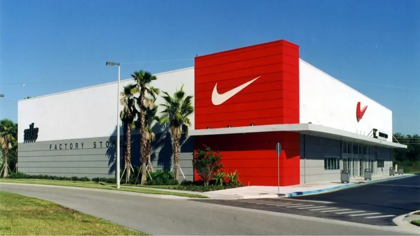

De tênis recordes a equipamentos olímpicos, passando por
equipamentos de atletismo e publicidade na internet, o logotipo da
Nike está em toda parte. No entanto, por incrível que pareça, sua
história começou, com baixas expectativas, com um emprego universitário.
Em 1962, o corredor universitário Phil Knight, que estava completando seu
MBA em Stanford, desenvolveu uma tese sobre a introdução de empresas
japonesas de calçados nos EUA. Não foi um momento óbvio de sucesso:
A II Guerra Mundial fez parte da história recente, e a hostilidade ao
Japão continuou. Então, quando Knight voou para o Japão para convencer
uma empresa a importar seus tênis, deve ter parecido loucura. Essa foi a
origem da Nike ou, melhor dizendo, do seu antecessor, o Blue Ribbon Sports.
Knight importou Onitsuka ‘chinelos atléticos ’ (que mais tarde viria a
tornar-se Asics) e não os vendeu com a ajuda de campanhas maravilhosas
com celebridades, mas fê-lo a partir do porta-malas do seu carro, pago
com dinheiro que tinha emprestado ao pai, já desesperado. Mas se a
auto-denominada ideia maluca de Knight ‘’ parecia imprudente para a
maioria, Bill Bowerman não era assim. O lendário treinador havia
preparado Knight na equipe de atletismo da Universidade de Oregon e
ele conhecia muito bem sua obsessão com tênis de corrida.